Learning-Augmented Smooth Integer Programs with PAC-Learnable Oracles
Hao-Yuan He(何浩源)
ABL Seminar @ Nanjing University
Background Prior work Problem Method Guarantees Learning Experiments Takeaways
动机
求解推理问题的计算复杂度 (通常是 NP-hard) 是反绎学习的瓶颈
若是能让学习促进推理，则有希望打破这个瓶颈
这个工作的出发点：
如何设计一个框架，具有高效的求解效率的同时兼顾可证明的收益？
Background Prior work Problem Method Guarantees Learning Experiments Takeaways
Smooth integer programs
We maximize a polynomial of fixed degree d over Boolean assignments:
Smoothness means the coefficients are bounded: ∣cT∣≤βnd−∣T∣ for a constant β.
- MaxCut: x∈{0,1}nmax{i,j}∈E∑[xi(1−xj)+xj(1−xi)].
- Max-k-SAT: x∈{0,1}nmaxC∑[1−ℓ∈C∏(1−ℓ(x))], where ℓ(x)∈{xi,1−xi}.
Background Prior work Problem Method Guarantees Learning Experiments Takeaways
Why these problems are hard to approximate
A PTAS (polynomial-time approximation scheme) reaches ratio 1−η for every fixed η>0.
Its running time is polynomial in n, but it may grow quickly as η gets smaller.
General MaxCut and Max-k-SAT (k≥2) are APX-hard, so they have no PTAS unless P = NP.
More polynomial-time computation alone cannot make the error arbitrarily small.
Background Prior work Problem Method Guarantees Learning Experiments Takeaways
Arora et al.: a PTAS for dense instances
Dense instances do admit a PTAS (Arora, Karger & Karpinski, 1999).
The idea is that a vertex is easy to place once we know where its neighbours are.
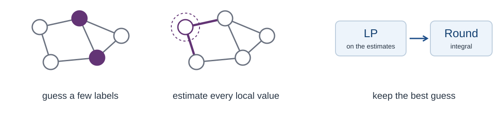
For MaxCut, p(x)=∑ixi(di−ri(x)), where ri(x) counts the neighbours of i on side 1.
So it suffices to estimate the values ri(x∗) from a small sample, instead of guessing x∗.
Background Prior work Problem Method Guarantees Learning Experiments Takeaways
Arora et al.: an LP built from sampled estimates
A sample of ∣S∣=O(logn/η2) vertices gives estimates ρi with ∣ρi−ri(x∗)∣≤ηn.
On every feasible y, including x∗, the LP objective q is within ηn2 of p:
So the loss is O(ηnd) in degree d, which is small only on dense instances.
High accuracy is also slow, since all 2∣S∣=nO(1/η2) sample labellings are tried.
Background Prior work Problem Method Guarantees Learning Experiments Takeaways
Bampis et al.: predicting the sample labels
Bampis et al. (2024) keep this pipeline, but take the sample labels from a predictor:
If hS of the predicted sample labels are wrong, each estimate gets a second error term:
This removes the enumeration, but each wrong label is scaled up by n/∣S∣.
Even with perfect labels, the sampling error ηn remains.
Background Prior work Problem Method Guarantees Learning Experiments Takeaways
Bampis et al.: the result compared with Arora's
Their guarantee has the same form as Arora's, with one extra term for the wrong labels:
| Value of the returned solution | Running time | |
|---|---|---|
| Arora et al. | OPT−ηnd | nO(1/η2), from enumeration |
| Bampis et al. | OPT−(η+O(hS/∣S∣))nd | polynomial, independent of η |
On dense instances these become the ratios 1−η and 1−η−O(hS/∣S∣).
The real gain is speed: a polynomial number of LPs replaces the enumeration.
Background Prior work Problem Method Guarantees Learning Experiments Takeaways
Learning-augmented algorithms
This is the learning-augmented setting: extra information arrives as a prediction.
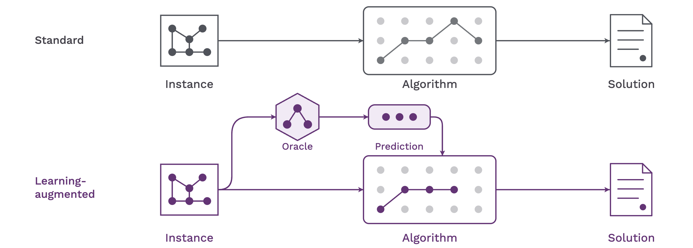
The question is how the quality of the prediction controls the quality of the solution.
Background Prior work Problem Method Guarantees Learning Experiments Takeaways
Our goal and the two questions
Our goal is an end-to-end framework in which the oracle itself is learned from data.
Q1. Can a prediction with errors give a guarantee that degrades gracefully?
Method and Guarantees: LEAP, and how its loss grows with the prediction errors.
Q2. Can we learn the oracle from data, with a PAC-style guarantee?
Learning: choose the oracle by the cost of the solutions it leads to.
Background Prior work Problem Method Guarantees Learning Experiments Takeaways
LEAP at a glance
We call the method LEAP: LEarning-augmented Approximation via linear Programming.
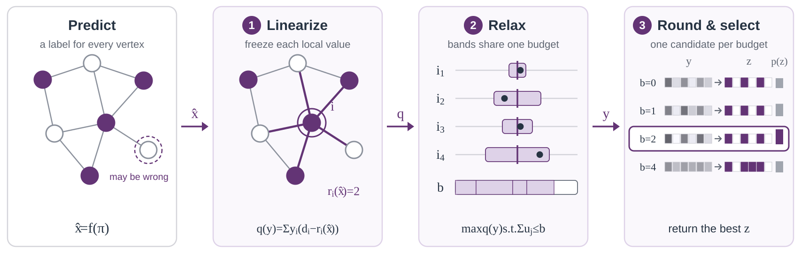
The next three slides go through the steps one at a time.
Background Prior work Problem Method Guarantees Learning Experiments Takeaways
Step 1: linearize at the prediction
An oracle f predicts a full assignment x=f(π)∈{0,1}n for the instance π.
Then nothing needs to be sampled or enumerated: we freeze ri at the prediction.
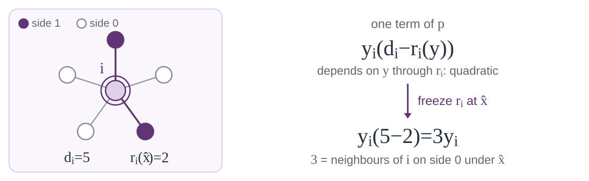
The prediction only provides reference values; the LP still chooses the decisions.
But some labels of x may be wrong, so the frozen values can be off.
Background Prior work Problem Method Guarantees Learning Experiments Takeaways
Step 2: relax with an error budget
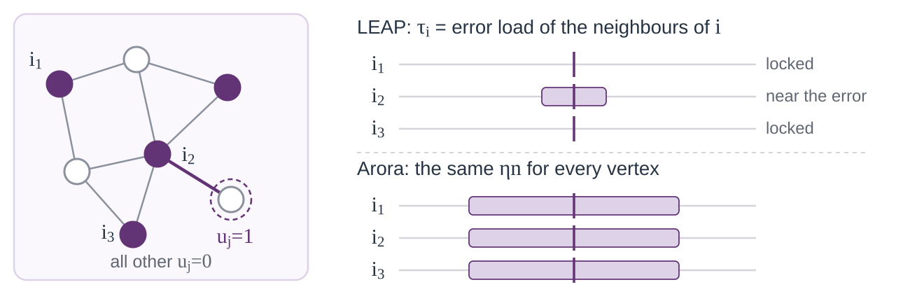
A wrong label at j moves ri by one at each neighbour i, so the optimum satisfies:
We do not know which labels are wrong, so we relax the indicators to uj∈[0,1]:
Each uj enters the tolerance of all dj neighbours, so a budget b costs at most:
So on every feasible y, the LP objective is within Φb of the true value p(y).
Background Prior work Problem Method Guarantees Learning Experiments Takeaways
Step 3: round, and select the best budget
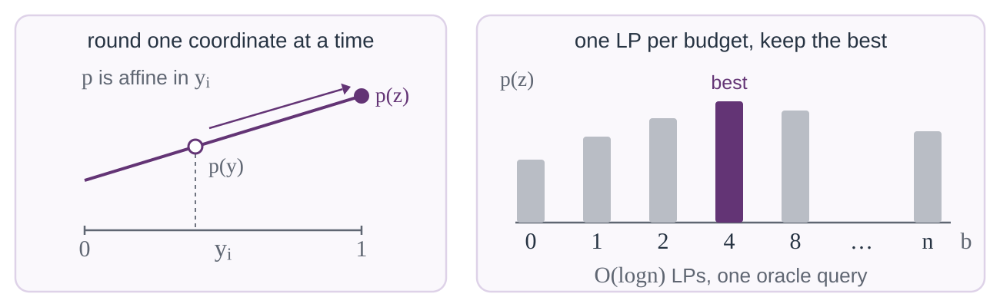
Since p is multilinear, rounding the LP solution y gives an integral z with p(z)≥p(y).
The number of wrong labels is unknown, so we try every budget b and keep the best p(z).
A doubling grid needs only O(logn) LPs, at the price of one more factor of two.
Background Prior work Problem Method Guarantees Learning Experiments Takeaways
The general guarantee: loss bounded by the footprint
Let ε=∥x−x∗∥1 be the number of wrong predicted labels.
For multilinear p, LEAP returns a solution z with
Here Φε(x) is the most objective mass that ε wrong labels can affect.
For degree d, the same construction runs over a recursive decomposition of p.
At b=ε, uj=1[xj=xj∗] makes x∗ feasible, and ∣p−q∣≤Φε at y and x∗:
The bound needs no assumption on how the errors are distributed.
A perfect prediction has Φ0=0, so LEAP then returns an optimal solution.
Background Prior work Problem Method Guarantees Learning Experiments Takeaways
Dense and near-dense instances
How large is the footprint? Smoothness alone gives Φε=O(nd−1ε) for degree d.
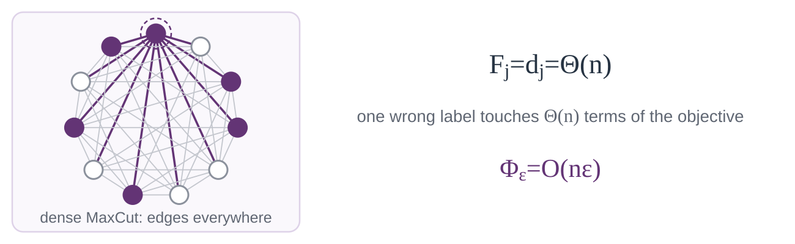
Dividing by OPT turns the additive bound into an approximation ratio:
| Setting | Objective scale | Approximation ratio |
|---|---|---|
| Dense | OPT=Ω(nd) | 1−O(ε/n) |
| Near-dense, 0≤γ<1 | OPT=Ω(nd−1+γ) | 1−O(ε/nγ) |
The near-dense row already goes beyond the dense regime of Arora and Bampis.
Background Prior work Problem Method Guarantees Learning Experiments Takeaways
Sparse instances with bounded occurrence
Local structure gives a much smaller footprint, without any density.
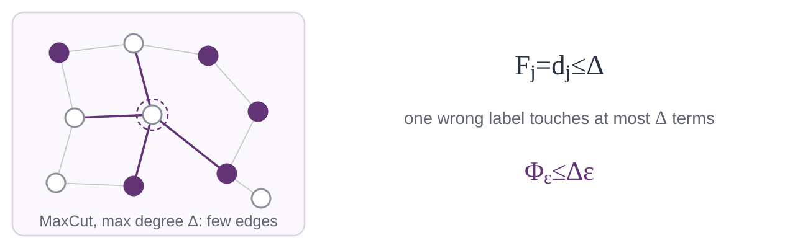
If every literal appears in at most Δ clauses, a wrong variable affects O(Δ) clauses:
For constant Δ, the loss falls from O(nd−1ε) to O(ε).
Bounded-occurrence instances are still APX-hard; the gain comes from the prediction.
Background Prior work Problem Method Guarantees Learning Experiments Takeaways
Approximation guarantees at a glance
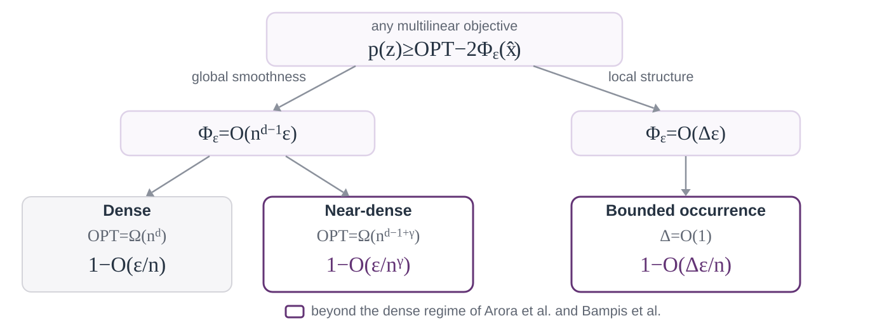
All three ratios reach 1 when ε=0; the purple ones go beyond the prior work.
Background Prior work Problem Method Guarantees Learning Experiments Takeaways
Choosing the oracle from data
For Q2, following Gupta & Roughgarden (2017), we learn the oracle from past instances.
We score each oracle f∈F by the value of the LEAP solution zf(π) it leads to:
Then we pick the oracle with the lowest average cost on m i.i.d. instances:
So a less accurate oracle can still win, if its errors hurt the solution less.
Background Prior work Problem Method Guarantees Learning Experiments Takeaways
What the learned oracle guarantees
With enough samples, the selected oracle satisfies, with probability at least 1−δ:
Here εF is the smallest expected prediction error of an oracle in F.
The footprint bounds give ΛFΦ=O(nd−1εF), or O(ΔεF) with bounded occurrence.
More samples shrink the selection error 2α; the sample size is in the backup slides.
Background Prior work Problem Method Guarantees Learning Experiments Takeaways
Experiments on dense instances
For Q1, we plot the relative gap to the planted optimum as more labels are flipped:
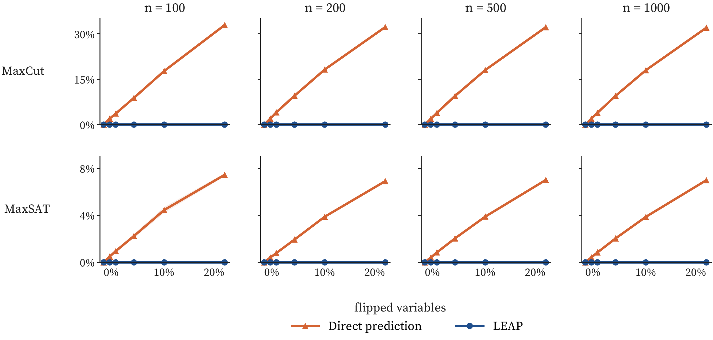
The raw prediction loses up to 30% on MaxCut, while LEAP stays at zero throughout.
Background Prior work Problem Method Guarantees Learning Experiments Takeaways
Experiments on sparse instances
This is the same measurement on sparse instances, where the O(Δε) bound applies:
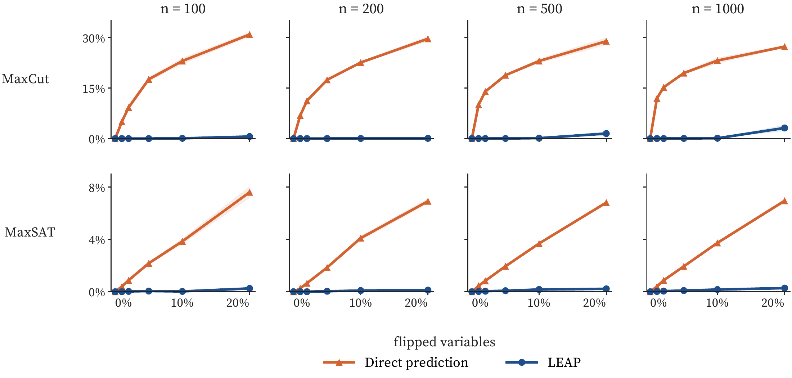
The raw prediction again loses up to 30%, while LEAP stays within a few percent.
Background Prior work Problem Method Guarantees Learning Experiments Takeaways
Experiments on large MaxSAT benchmarks
On real MaxSAT benchmarks, without a learned oracle, LEAP refines its own output.
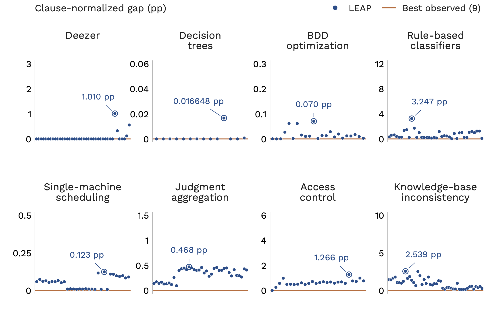
On instances with up to two million clauses, the mean gap stays below one point.
LEAP is slower: most runs take under an hour, against 60 seconds per baseline.
Background Prior work Problem Method Guarantees Learning Experiments Takeaways
Experiments on oracle selection
For Q2, ERM picks from four classes, three local-search heuristics and GNNs, n=200:
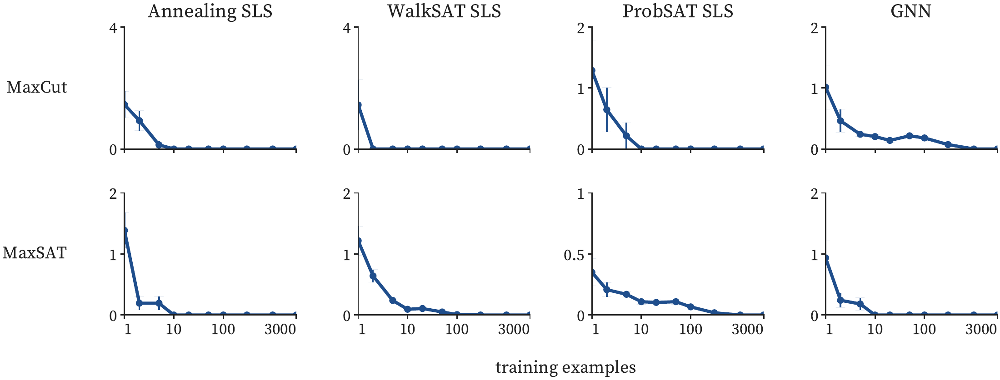
Its excess test risk over the class's best falls steadily toward zero with more data.
Background Prior work Problem Method Guarantees Learning Experiments Takeaways
Summary
Learned predictions bring provable guarantees to APX-hard problems.
Learnability gives a promising foundation for training such oracles end to end.
- Gradients can pass through LEAP on GPUs, though a few details need care.
- The open part is computational: an efficient ERM for expressive oracles.
Thank you.
Q&A?
Background Prior work Problem Method Guarantees Learning Experiments Takeaways Backup
Backup: general degree
Decompose p recursively into variables times lower-degree components:
Each non-root component of positive degree gets a tolerance from the shared budget:
Summing the tolerances gives the footprint weights and the footprint:
For MaxCut, Fj=dj, so Φb is the sum of the b largest degrees.
Fixed degree d gives O(nd−1) constraints; a non-multilinear p needs randomized rounding.
Background Prior work Problem Method Guarantees Learning Experiments Takeaways Backup
Backup: the learning guarantee in detail
Let dF=∑iVCdim(Fi), summed over the n coordinate classes of F.
The induced cost class has pseudo-dimension O(dFlog(edF)), so ERM needs
The class term is the best expected footprint loss in F:
The ERM step's computational efficiency for expressive classes remains open.
Background Prior work Problem Method Guarantees Learning Experiments Takeaways Backup
Backup: MaxSAT benchmark instances
The 256 instances on which all methods return an assignment (mean / maximum):
| Family | Instances | Variables | Clauses | Width |
|---|---|---|---|---|
| Deezer | 40 | 25 / 156 | 169 / 1 684 | 2.00 / 2 |
| Decision trees | 14 | 27 015 / 82 071 | 231 206 / 660 735 | 5.27 / 98 |
| BDD optimization | 23 | 6 491 / 21 190 | 453 237 / 1 887 499 | 2.75 / 128 |
| Rule-based classifiers | 38 | 27 611 / 141 265 | 359 859 / 1 970 958 | 2.81 / 97 |
| Single-machine scheduling | 31 | 26 343 / 43 672 | 734 582 / 1 775 621 | 2.97 / 3 |
| Judgment aggregation | 38 | 12 894 / 22 994 | 296 276 / 1 567 566 | 2.89 / 3 |
| Access control | 26 | 1 877 / 2 050 | 5 043 / 6 900 | 2.44 / 23 |
| Knowledge-base inconsistency | 46 | 64 919 / 326 096 | 156 135 / 648 235 | 2.61 / 121 |
Baselines: nine solver configurations, 60 s each; LEAP: best of five runs of ten rounds.
Background Prior work Problem Method Guarantees Learning Experiments Takeaways Backup
Backup: selected references
- Arora, Karger & Karpinski (1999). Polynomial Time Approximation Schemes for Dense Instances of NP-Hard Problems.
- Bampis, Escoffier & Xefteris (2024). Parsimonious Learning-Augmented Approximations for Dense Instances of NP-Hard Problems.
- Gupta & Roughgarden (2017). A PAC Approach to Application-Specific Algorithm Selection.